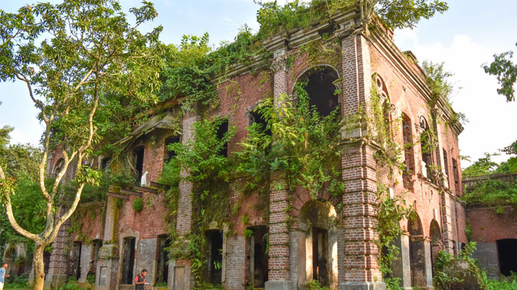
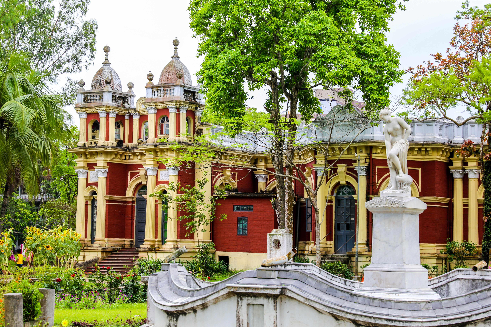
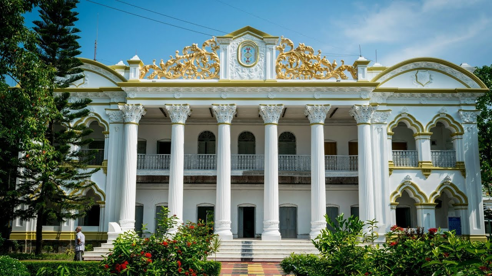
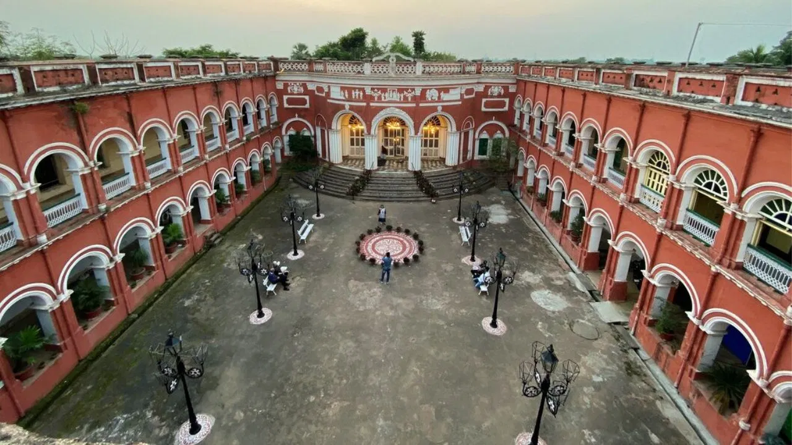

লক্ষণ সাহার জমিদার বাড়ি নরসিংদী
জমিদার লক্ষণ সাহা এই জমিদার বংশের মূল গোড়াপত্তনকারী। তবে কবে নাগাদ এই জমিদার বংশ এবং জমিদার বাড়িটি প্রতিষ্ঠিত হয়েছে তার সঠিক তথ্য জানা যায়নি। এই জমিদার বংশধররা অন্য জমিদারের আওতাভুক্ত ছোট জমিদার ছিলেন। তবে তাদের কখনো তারা যে জমিদারের আওতাভুক্ত ছিলেন তাদেরকে বা ব্রিটিশ সরকারকে খাজনা দিতে হয়নি। কারণ এই জমিদারী এলাকাটি ভারত উপমহাদেশের মধ্যে একমাত্র এলাকা ওয়াকফ হিসেবে ছিল। লক্ষণ সাহার তিন পুত্র সন্তান ছিল। এদের মধ্যে ছোট ছেলে ভারত ভাগের সময় ভারতে চলে যান। এরপর পাকিস্তান থেকে বাংলাদেশ স্বাধীন হওয়ার অল্প কিছুদিন আগে বড় ছেলেও ভারতে চলে যান। থেকে যান মেঝো ছেলে। তার ছিল এক পুত্র সন্তান। যার নাম ছিল বৌদ্ধ নারায়ণ সাহা। এই বৌদ্ধ নারায়ণ সাহাই পরবর্তীতে আহম্মদ আলী উকিলের কাছে উক্ত বাড়িটি বিক্রি করে দেন। তাই আহম্মদ আলী সাহেব পেশায় একজন উকিল হওয়াতে বর্তমানে অনেকে এই বাড়িটিকে উকিল বাড়ি নামেও চিনে
রাজা টংকমনাথের রাজবাড়ি ঠাকৃরগাঁও
রাজা টংকনাথ এর পূর্ব-পুরুষদের কেউ জমিদার ছিলেন না । বর্তমানে রাণীশংকৈল উপজেলা সদর হতে ৭ কিমি পূর্বে কাটিহার নামক জায়গায় গোয়ালা বংশীয় নিঃসন্তান এক জমিদার বাস করতেন । উক্ত জমিদারের মন্দিরে সেবায়েত হিসাবে কাজ করতেন টংকনাথের পিতা বুদ্ধিনাথ । গোয়ালা জমিদার ভারত এর কাশি যাওয়ার সময় তাম্রপাতে দলিল করে যান যে, তিনি ফিরে না এলে মন্দিরের সেবায়েত বুদ্ধিনাথ জমিদারির মালিক হবেন । গোয়ালা জমিদার ফিরে না আসায় বুদ্ধিনাথ জমিদারির মালিক হন । তবে অনেকে মনে করেন এই ঘটনা বুদ্ধিনাথ দু-এক পুরুষ পূর্বেরও হতে পারে। জমিদার বুদ্ধিনাথের দ্বিতীয় ছেলে টংকনাথ তৎকালীন ব্রিটিশ সরকারের আস্থা অর্জন করার জন্য মালদুয়ার স্টেট গঠন করেন । বিভিন্ন সময় সমাজ সেবা মূলক কাজের জন্য ১৯২৫ সালে তৎকালীন ব্রিটিশ সরকার টংকনাথকে চৌধুরী উপাধিতে ভূষিত করেন। পরবর্তীতে দিনাজপুরের মহারাজা গিরিজনাথ রায়ের বশ্যতা স্বীকার করে রাজা উপাধি পান। পরে রাজা টংকনাথের স্ত্রী রাণী শংকরী দেবীর নামানুসারে মালদুয়ার স্টেটের নাম করণ করা হয় রাণীশংকৈল। দেশভাগের প্রাক্কালে রাজা জমিদারি ছেড়ে ভারতে পাড়ি জমান । এর মধ্য দিয়ে মালদুয়ার স্টেট রাজা টংকনাথ চৌধুরীর জমিদারি পরম্পরার সমাপ্তি ঘটে।
শশী লজ ময়মনসিং
মুক্তাগাছা জমিদারির প্রতিষ্ঠাতা শ্রীকৃষ্ণ আচার্য চৌধুরীর তৃতীয় উত্তরপুরুষ রঘুনন্দন আচার্য চৌধুরী নিঃসন্তান ছিলেন। অথচ পিতৃতান্ত্রিক সমাজের সাংগঠনিক কাঠামো অনুযায়ী, সম্পত্তি সংরক্ষণে সক্ষম একটি পুত্রসন্তান ভীষণভাবে প্রয়োজন। তাই দত্তক পুত্র গ্রহণের সিদ্ধান্তে উপনীত হলেন তিনি। গৌরীকান্ত আচার্য চৌধুরীকে দত্তক নিলেন রঘুনন্দন। মৃত্যুর আগে দত্তক পুত্রের হাতে জমিদারির ভার অর্পণ করেন।[২] জমিদার গৌরীকান্ত আচার্য চৌধুরীর প্রতিও সদয় ছিল না নিয়তি। সন্তানহীন অবস্থায় অকালপ্রয়াণ ঘটল তাঁরও। গৌরীকান্তের বিধবা পত্নী বিমলা দেবী দত্তক নিলেন কাশীকান্তকে। কাশীকান্তের কপালও মন্দ ছিল ভীষণ। দীর্ঘ রোগযন্ত্রণায় ভুগে সন্তানহীন অবস্থায় পরলোকগমন করলেন তিনিও। তাঁর বিধবা পত্নী লক্ষ্মী দেবী আচার্য চৌধুরানী পূর্বসূরিদের পথ অনুসরণ করে দত্তক নিলেন চন্দ্রকান্তকে। ভাগ্যের বিরুদ্ধাচরণে চন্দ্রকান্তও অতিদ্রুত ত্যাগ করলেন পৃথিবীর মায়া। তবে হাল ছাড়লেন না লক্ষ্মী দেবী। পুনরায় দত্তক নিলেন তিনি। দ্বিতীয় দত্তক পুত্রের পূর্বনাম পূর্ণচন্দ্র মজুমদার। কুলগুরুর সামনে মহাসমারোহে লক্ষ্মী দেবী নতুন নাম রাখলেন পুত্রের—সূর্যকান্ত আচার্য চৌধুরী। [২] সূর্যকান্ত আচার্য চৌধুরীর শাসনামলে ব্রহ্মপুত্র তীরবর্তী জনপদে যুক্ত হলো সোনালি মাত্রা। প্রায় ৪১ বছর জমিদারি পরিচালনার প্রশস্ত প্রেক্ষাপটে বহু জনহিতকর কাজ করলেন তিনি। ময়মনসিংহে স্থাপন করলেন একাধিক নান্দনিক স্থাপনা। ঊনবিংশ শতকের শেষপাদে ময়মনসিংহ শহরের কেন্দ্রস্থলে নয় একর ভূমির ওপর একটি অসাধারণ দ্বিতল ভবন নির্মাণ করলেন সূর্যকান্ত। নিঃসন্তান সূর্যকান্তের দত্তক পুত্র শশীকান্ত আচার্য চৌধুরীর নামে এই ভবনের নাম রাখা হলো শশী লজ। বিখ্যাত এই ভবনটি ১৮৯৭ সালের ১২ জুন গ্রেট ইন্ডিয়ান ভূমিকম্পে বিধ্বস্ত হলে অত্যন্ত ব্যথিত হন সূর্যকান্ত আচার্য চৌধুরী। ১৯০৫ সালে ঠিক একই স্থানে নতুনভাবে শশী লজ নির্মাণ করেন পরবর্তী জমিদার শশীকান্ত আচার্য চৌধুরী। ১৯১১ সালে শশী লজের সৌন্দর্যবর্ধনে তিনি সম্পন্ন করেন আরও কিছু সংস্কারকাজ। নবীন জমিদারের প্রাণান্ত প্রয়াসে শশী লজ হয়ে ওঠে অনিন্দ্যসুন্দর, অপরূপ।
মহেরা জমিদার বাড়ি টাঙ্গাইল
১৮৯০ দশকের পূর্বে স্পেনের করডোভা নগরীর আদলে জমিদার বাড়ীটি প্রতিষ্ঠিত হয়েছিল।[৩] স্বাধীনতা যুদ্ধে পাকবাহিনী মহেড়া জমিদার বাড়ীতে হামলা করে এবং জমিদার বাড়ীর কূলবধূ সহ পাঁচজন গ্রামবাসীকে নির্মমভাবে গুলি করে হত্যা করে (১৯৭১)। পরবর্তীতে তারা লৌহজং নদীর নৌপথে এ দেশ ত্যাগ করেন। এখানেই তখন মুক্তিবাহিনীর ক্যাম্প স্থাপন করা হয়েছিল। এ জমিদার বাড়ীটি পুলিশ ট্রেনিং স্কুল হিসেবে প্রতিষ্ঠার উদ্যোগ গ্রহণ করা হয় (১৯৭২)। এবং পুলিশ ট্রেনিং স্কুলকে পুলিশ ট্রেনিং সেন্টারে উন্নীত করা হয় (১৯৯০)
বালিয়াহাটি জমিদার বাড়ি, মানিকগঞ্জ
বালিয়াটি প্রাসাদ বাংলাদেশের ঢাকা বিভাগের অন্তর্গত মানিকগঞ্জ জেলার সদর থেকে আনুমানিক আট কিলোমিটার পশ্চিমে এবং ঢাকা জেলা সদর থেকে পয়ত্রিশ কিলোমিটার দূরে সাটুরিয়া উপজেলার বালিয়াটি গ্রামে অবস্থিত। এটি বাংলাদেশের ১৯ শতকে নির্মিত অন্যতম প্রাসাদ। একে বালিয়াটি জমিদার বাড়ি বা বালিয়াটি প্রাসাদ বলেও ডাকা হয়।[১] মোট সাতটি স্থাপনা নিয়ে এই জমিদার বাড়িটি অবস্থিত। এই বালিয়াটি জমিদার বাড়ি বা প্রাসাদটির সবগুলো ভবন একসাথে স্থাপিত হয় নি। এই প্রাসাদের অন্তর্গত বিভিন্ন ভবন জমিদার পরিবারের বিভিন্ন উত্তরাধিকার কর্তৃক বিভিন্ন সময়ে স্থাপিত হয়েছিল। বর্তমানে কেন্দ্রীয় ব্লকটি যাদুঘর। এই প্রাসাদটি বাংলাদেশ প্রত্নতাত্ত্বিক বিভাগ কর্তৃক সংরক্ষিত ও পরিচালিত।
মুরাপাড়র জমিদার বাড়ি নারায়ণগন্জ
মুড়াপাড়া রাজবাড়িটি ৬২ বিঘা জমির ওপর অবস্থিত। এই জমিদার বাড়িটি তৈরি করেন বাবু রামরতন ব্যানার্জী যিনি এ অঞ্চলে মুড়াপাড়া জমিদারি প্রতিষ্ঠা করেছিলেন। এরপর তার কয়েকজন বংশধর কর্তৃক প্রাসাদটি সংস্কার ও সম্প্রসারণ করা হয়। ১৮৮৯ খ্রিষ্টাব্দে জমিদার প্রতাপচন্দ্র ব্যানার্জী এই ভবনের পিছনের অংশ সম্প্রসারণ করেন ও পরিবার নিয়ে এখানেই বসাবাস শুরু করেন। তার পুত্র বিজয় চন্দ্র ব্যানার্জী ১৮৯৯ খ্রিষ্টাব্দে প্রাসাদের সামনের অংশে একটি ভবন নির্মাণ ও ২টি পুকুর খনন করেন। ১৯০৯ খ্রিষ্টাব্দে তার দুই পুত্র জগদীশ চন্দ্র ব্যানার্জী ও আশুতোষ চন্দ্র ব্যানার্জী কর্তৃক প্রাসাদের দোতালার কাজ সম্পন্ন হয়।[২] ১৯৪৭ খ্রিষ্টাব্দে ভারত উপমহাদেশ বিভক্ত হওয়ার পর জগদীশ চন্দ্র তার পরিবার নিয়ে কলকাতা গমন করেন। এরপর থেকে বাড়িটি পরিত্যক্ত অবস্থায় ছিল। ১৯৪৮ খ্রিষ্টাব্দে তৎকালীন পাকিস্তান সরকার বাড়িটি দখল নেয় এবং এখানে হাসপাতাল ও কিশোরী সংশোধন কেন্দ্রের কার্যক্রম শুরু করে। ১৯৬৬ খ্রিষ্টাব্দে এখানে স্কুল ও কলেজের কার্যক্রম পরিচালনা করা হত। বাংলাদেশ স্বাধীন হওয়ার পর ১৯৮৬ খ্রিষ্টাব্দে বাংলাদেশ প্রত্নতত্ত্ব অধিদপ্তর বাড়িটির দায়িত্ব গ্রহণ করে সেটিকে প্রত্নতাত্ত্বিক স্থাপনা হিসেবে তালিকাভুক্ত করে। বর্তমানে এটি সরকারি মুড়াপাড়া কলেজ নামে পরিচিত।